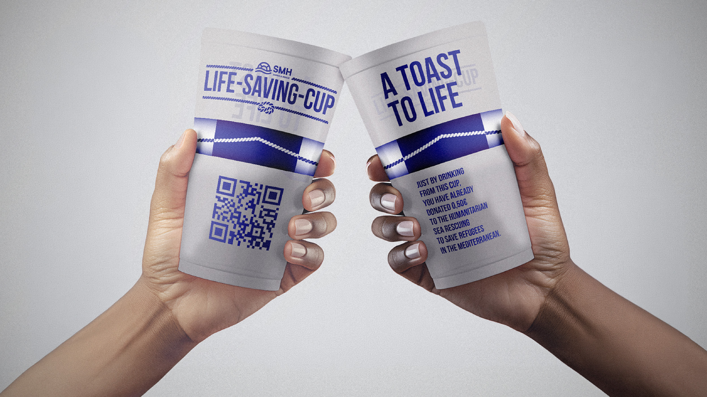

For many refugees, crossing the Mediterranean is a matter of life and death. For tourists, it's a holiday destination. This campaign bridges that gap by getting people to do what they do anyway: drink.
The idea: Every reusable cup served at bars and clubs donates €0.50 to SMH (Salvamento Marítimo Humanitário), funding sea rescue missions in the Mediterranean. Bars already charge €1 for reusable cups that cost €0.20 to produce, the margin does the work, while businesses benefit from tax incentives.
A toast to life. Turning the most ordinary summer gesture into an act of solidarity.
Art Direction - Vasco R. Cunha
Copywriter - Manuel Stock